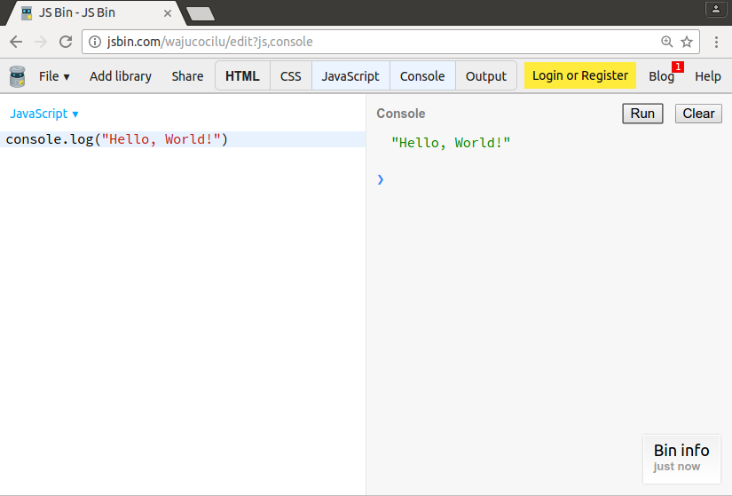
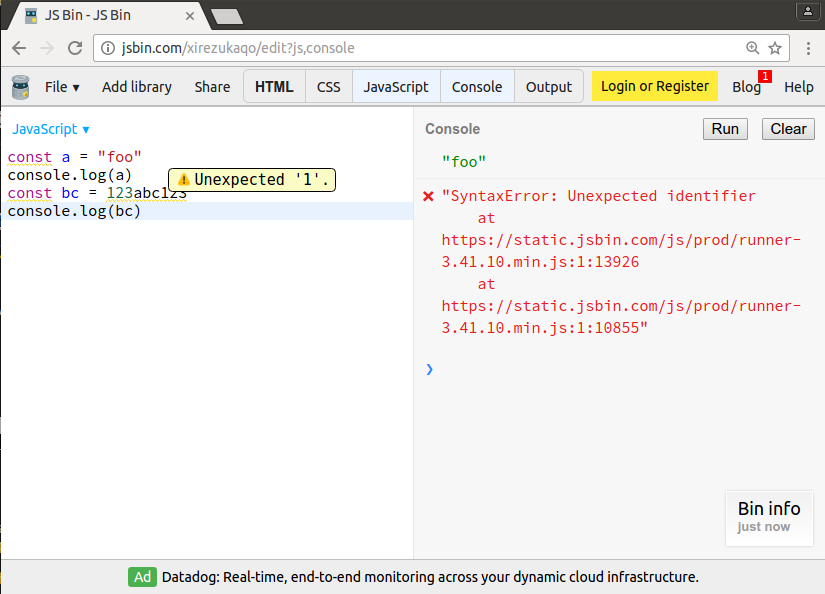

Intro to Software Development in Javascript
Sources derived from:
These slides are at:
Welcome!
Since I cribbed lots of their material, I'll leave in their plug:
GDI provides affordable and accessible programs to learn software through mentorship and hands-on instruction.
Some "rules"
- We are here for you!
- Every question is important.
- Help each other.
- Have fun.
Welcome!
Introductions - about me
- Full-time software engineer
- Oracle, Curalate
- 10 years of programming
- wyantb@gmail.com
- I, too, have a blog
Welcome!
Introductions - about you
- What's your name?
- What do you hope to get out of this class?
Several ways of learning like a boss
- Always type in code yourself
- "Feynman Technique"
- Be social / think like you're in a martial arts dojo
Learning Tip 1 - Always type in code yourself
By hand, not copy/paste
Why? You'll make errors, and learn from interpreting those errors
Learning Tip 2 - Feynman Technique
Teach the subject to a "child", review, organize & simplify
https://qz.com/849256/how-to-master-a-new-subject/
One of the best ways to identify the gaps in your own knowledge is to spot where you can't explain something very simply
Story time: what is "rubber duck programming"?
Learning Tip 3 - Social Dojo
One master to learn from, one peer to compete against, one student to teach
The idea is to get real and continuous feedback about what you know and what you don't from every angle
Frank Shamrock: "False ideas about yourself destroy you. For me, I always stay a student...you have to use that humility as a tool. You put yourself beneath someone you trust."
(Ryan Holiday, "Ego is the enemy", page 40)
Computers need simple, clear instructions
Thinking like a programmer
Computers are great at processing. They are bad at understanding.
When you write a program, you must break down every step into simple pieces.
This means that, at the level of programming, computers are really hard to work with!
Programming languages are based on building blocks
Spoken languages have verbs, nouns, parts of speech, etc
Programming languages have:
- Variables
- Methods
- Control Statements (if/else, loops, etc)
- ...other stuff...
Master the building blocks, and you've mastered programming
JavaScript is the language of the web

Photo credits: Andrew E. Larson and John Seb Barber cc
So what's up with JavaScript?
You can see it all in the developer tools & devtools console.

- To open the console:
- In Chrome, use the keyboard shortcut:
- Mac: Command + Option + J
- Windows: Control + Shift + J
Though...let's actually use JSBin
Throwing you into the deep end soon...
First, a quick review / primer on basic JS concepts
Building Block: Variables
Just like 'x' in algebra, a variable is a named container for a value
To declare (create) a variable, just type the word const and the variable name.
const numberOfKittens = 5;Giving your variables a starting value - here, 5, is called initializing the variable.
Building Block: Methods
Methods *do* things
You've seen one method already: console.log, which prints to the console
const numberOfKittens = 5;
console.log(numberOfKittens);Building Block: Variable Types
- string string of characters
const userName = 'Jane Lane'; console.log(userName); - number integer or floating point
const myAge = 30; - boolean true or false
const catsAreBest = true; - null an explicitly empty value
const goodPickupLines = null; - array a list of values - more advanced!
const someNumbers = [1, 2, 3]; console.log(someNumbers[0], someNumbers[1], someNumbers[2]); console.log(someNumbers.join(", and also: ")); - object a container of named values - yet more advanced!
const personJane = { firstName: 'Jane', lastName: 'Lane' }; console.log(personJane.firstName);
Building Block: Methods 2
Here's a new method: Math.random(), that returns a decimal between 0 and 1
Try running this one multiple times!
const randomNumber = Math.random();
console.log(randomNumber);Building Block: Comments
Comments are ignored by the computer
const myFavoriteNumber = 5; // Is it really?
// I can write anything I want here
console.log(myFavoriteNumber);Building Block: Methods 3
And you can make your own functions (two new building blocks here!)
const janesName = "Jane " + "Doe"; // What is "string concatenation" in your words?
console.log(janesName);
function greetPerson(name) { // Your method
const greeting = "Hello, " + name;
console.log(greeting);
}
console.log(greetPerson(janesName));Building Block: Operators
Once you have variables, you can do math with them, or compare them to other things
| Example | Name | Result |
|---|---|---|
-a |
Negation | Opposite of a. |
a + b |
Addition | Sum of a and b. |
a - b |
Subtraction | Difference of a and b. |
a * b |
Multiplication | Product of a and b. |
a / b |
Division | Quotient of a and b. |
a % b |
Modulus | Remainder of a divided by b. |
a < b |
Less than | Gives true if a is less than b, false otherwise |
a > b |
Greater than | Gives true if a is greater than b, false otherwise |
Building Block: Control Statements - If
Try running this one multiple times!
const randomNumber = Math.random() * 5;
const isUnderThree = randomNumber < 3;
console.log(isUnderThree);
if (isUnderThree) {
console.log("The number is under 3");
} else {
console.log("The number is above 3");
}Throwing you into the deep end
Every program is broken by default - experts just hide their mistakes better
Learn to march on through the uncertainty
Pencils down now
Skipping a lot of steps, allow me to preview a few more advanced building blocks
Advanced Building Block: Validate All Your Code With ESLint
Many programming languages have a forgiving syntax
As developers work in a language for more time, though, they'll notice common mistakes
Validators like ESLint allow you to learn from other developers' best practices and help you avoid mistakes
ESLint has a pretty high quality site - so check it out
Advanced Building Block: Track All Your Sources
Source control tools - such as git, Mercurial, or otherwise - are what companies use to track changes to code
These tools can be helpful in learning as well, since they can hold a history of what you've been learning & allow you to undo changes
For a lightweight version of this - feel free to use Dropbox!
Personally, I learned git by running through Git Immersion, though I had previous source control experience
Expert Building Block: APIs
(That's "Application Programming Interface")
Once you learn how one method functions, it doesn't change
With a well designed API, learning some functions helps you learn others
(Don't be intimidated by the jargon! console is an API we've used already - console.log specifically. As you learn more, API selection, evaluation, and usage become important topics. For now, you're learning just by knowing the term exists)
Expert Building Block: Different Programming Languages
Almost all programming languages have some concept of variables
How are variables declared in different languages?
What data types are available in different languages?
Note the similarities where you can, since they help you build on what you've already learned
(Don't be intimidated by this! You don't need to know these answers now!)
Questions? And resources:
Code Academy, with interactive lessons to help you review
Free Code Camp, with hundreds of hours of lessons, geared towards open source contributions
Dash, a much briefer intro to basic web dev tasks
Others:
- JavaScript Guide, from the Mozilla Developers Network.
- GDI Intro Classes
- JavaScript For Cats, the basics of JavaScript explained with extra cats.